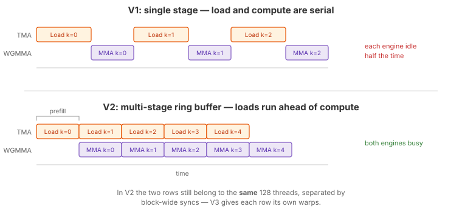
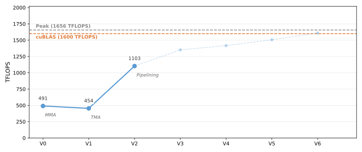

2. Multi-Stage Software Pipelining¶
In V1, each loop iteration first waits for TMA to finish loading data, then issues the WGMMA. Load and compute are fully serialized — the TMA engine sits idle during the MMA, and the tensor cores sit idle during the load. Both of Hopper’s asynchronous engines spend most of their time waiting for the other.
This version introduces multi-stage software pipelining: shared memory is divided into multiple stages (a ring buffer), and the kernel prefills several stages before entering the main loop. In each iteration of the main loop, the TMA loads data for a future iteration while the tensor cores process data from a previously loaded stage.
Pipelining is the right idea, and every later version keeps it. But V2 is also
the one version in this series that ends up slower than its predecessor, and
understanding why is more instructive than the speedup would have been: a ring
buffer indexed at runtime costs more than the overlap it buys, and the block-wide
__syncthreads() around each stage puts a hard floor under how much overlap is
achievable at all. V3 fixes both.
If you have used Triton, this is similar to Triton’s num_stages parameter —
but here you control the pipelining explicitly: allocating per-stage buffers,
issuing prefill loads, and managing phase tracking yourself.
The Full Kernel¶
@tilus.autotune("num_stages", [2, 3, 4])
@tilus.autotune(
"block_m, block_n", [(64, 128), (128, 128), (128, 256), (256, 128), (256, 256)]
)
@tilus.autotune("block_k", [16, 32, 64])
class MatmulWGMMAV2(tilus.Script):
def __init__(
self,
num_stages,
block_m,
block_n,
block_k,
):
super().__init__()
self.num_stages = num_stages
self.block_m = block_m
self.block_n = block_n
self.block_k = block_k
def __call__(
self,
m_size: int32,
n_size: int,
k_size: int,
a_ptr: ~float16,
b_ptr: ~float16,
c_ptr: ~float16,
):
self.attrs.blocks = [
cdiv(m_size, self.block_m),
cdiv(n_size, self.block_n),
]
self.attrs.warps = 4
block_m, block_n, block_k = self.block_m, self.block_n, self.block_k
offset_m: int32 = block_m * self.blockIdx.x
offset_n: int32 = block_n * self.blockIdx.y
ga = self.global_view(a_ptr, dtype=float16, shape=[m_size, k_size])
gb = self.global_view(b_ptr, dtype=float16, shape=[n_size, k_size])
sa = self.shared_tensor(dtype=float16, shape=[self.num_stages, block_m, block_k])
sb = self.shared_tensor(dtype=float16, shape=[self.num_stages, block_n, block_k])
acc = self.register_tensor(dtype=float32, shape=[block_m, block_n], init=0.0)
tma_barriers = self.mbarrier.alloc(counts=[1 for _ in range(self.num_stages)])
phase = self.register_tensor(dtype=uint32, shape=[self.num_stages], init=0)
num_iters: int32 = cdiv(k_size, block_k)
max_num_stages: int32 = min(num_iters, self.num_stages)
for stage in range(max_num_stages):
offset_k = stage * self.block_k
with self.single_thread():
self.mbarrier.arrive_and_expect_tx(
tma_barriers[stage],
transaction_bytes=sa[stage].nbytes + sb[stage].nbytes,
)
self.tma.global_to_shared(
src=ga,
dst=sa[stage],
offsets=[offset_m, offset_k],
mbarrier=tma_barriers[stage],
)
self.tma.global_to_shared(
src=gb,
dst=sb[stage],
offsets=[offset_n, offset_k],
mbarrier=tma_barriers[stage],
)
for iter in range(num_iters):
stage = iter % self.num_stages
self.mbarrier.wait(tma_barriers[stage], phase=phase[stage])
self.sync()
self.wgmma.fence()
self.wgmma.mma(sa[stage], sb[stage].transpose(), acc)
self.wgmma.commit_group()
self.wgmma.wait_group(0)
phase[stage] ^= 1
preload_iter = iter + self.num_stages
if preload_iter < num_iters:
preload_stage = preload_iter % self.num_stages
offset_k = preload_iter * self.block_k
with self.single_thread():
self.mbarrier.arrive_and_expect_tx(
tma_barriers[preload_stage],
transaction_bytes=sa[preload_stage].nbytes
+ sb[preload_stage].nbytes,
)
self.tma.global_to_shared(
src=ga,
dst=sa[preload_stage],
offsets=[offset_m, offset_k],
mbarrier=tma_barriers[preload_stage],
)
self.tma.global_to_shared(
src=gb,
dst=sb[preload_stage],
offsets=[offset_n, offset_k],
mbarrier=tma_barriers[preload_stage],
)
self.sync()
# sa/sb are deliberately not freed. The epilogue allocates no shared
# memory, so freeing reclaims nothing -- but it would return those slots
# to the allocator's free list, and the mbarrier allocator (which runs
# after the whole function is emitted) would then be free to place the
# barriers inside a buffer the TMA engine writes throughout the loop
# above, silently corrupting the barrier state.
casted_acc = self.cast(acc, dtype=float16)
gc = self.global_view(c_ptr, dtype=float16, shape=[m_size, n_size])
self.store_global(gc, casted_acc, offsets=[offset_m, offset_n])
What Changed from V1¶
V1 |
V2 |
|
|---|---|---|
Shared memory |
Single stage: |
Multi-stage ring buffer: |
TMA barriers |
1 barrier |
1 barrier per stage |
Phase tracking |
Single |
Per-stage |
Loop structure |
Load then compute, serial |
Prefill stages, then overlap load and compute |
New parameter |
— |
|
Software Pipelining¶
{kind=link}

Top: V1 serializes load and compute. Bottom: V2 overlaps them using a multi-stage ring buffer.¶
The idea is simple: if we have S stages of shared memory, we can have up to
S TMA loads in flight while one stage is being consumed by the tensor cores.
The kernel proceeds in two phases:
Prefill — Before the main loop, issue TMA loads for the first
SK-tiles. These loads run asynchronously; the kernel does not wait for them.Main loop — Each iteration does three things:
Wait: block on the current stage’s barrier until its TMA has landed.
Compute: run WGMMA on the current stage’s data.
Preload: issue a TMA load for K-tile
iter + Sinto the stage that was just consumed.
The stage index advances modulo
num_stages, cycling through the ring buffer.
The crucial reordering compared to V1 is that the preload for a future tile is issued while the tensor cores still have work queued behind them. By the time the loop comes back around to that stage, its data has already arrived, and the wait costs nothing.
Per-Stage Barriers and Phase Tracking¶
Each stage has its own mbarrier so that its TMA completion is tracked independently:
tma_barriers = self.mbarrier.alloc(counts=[1 for _ in range(self.num_stages)])
phase = self.register_tensor(dtype=uint32, shape=[self.num_stages], init=0)
V2 keeps a per-stage phase, held in a small register tensor, and flips
phase[stage] each time that stage is consumed. This is the most direct way to
express the ring buffer: each barrier alternates between “filled” and “consumed”
on its own schedule, and the phase array simply remembers where each one is.
Hint
V3 replaces this with a single per-role phase scalar that flips on
wrap-around, which the compiler can keep in one register instead of
num_stages of them.
Loop Unrolling and Stage Indices¶
There is a subtlety with a ring buffer: stage = iter % self.num_stages is a
runtime value, so every sa[stage] access needs an address computation, and
the compiler cannot see which barrier a given wait refers to. If instead the loop
body is unrolled by num_stages, each unrolled copy has a constant stage
index — the modulo folds away, addresses become compile-time offsets, and the
barrier waits resolve to specific barriers.
V2 uses Python’s range() and pays that cost. From V3 onward the
loops switch to self.range() with
unroll=num_stages:
for offset_k in self.range(0, k_size, block_k, unroll=self.num_stages):
Both are lowered to the same loop statement internally; self.range just
carries the extra unroll hint.
Walkthrough¶
Prefill¶
for stage in range(max_num_stages):
offset_k = stage * self.block_k
with self.single_thread():
self.mbarrier.arrive_and_expect_tx(
tma_barriers[stage],
transaction_bytes=sa[stage].nbytes + sb[stage].nbytes,
)
self.tma.global_to_shared(
src=ga,
dst=sa[stage],
offsets=[offset_m, offset_k],
mbarrier=tma_barriers[stage],
)
self.tma.global_to_shared(
src=gb,
dst=sb[stage],
offsets=[offset_n, offset_k],
mbarrier=tma_barriers[stage],
)
Before the main loop, one TMA load is issued per stage without waiting. Each
targets stage i and signals tma_barriers[i]. max_num_stages guards
the case where the K loop is shorter than the pipeline depth — with
k_size / block_k < num_stages there is simply not enough work to fill every
stage, and issuing loads past the end of K would read out of bounds.
Main Loop¶
for iter in range(num_iters):
stage = iter % self.num_stages
self.mbarrier.wait(tma_barriers[stage], phase=phase[stage])
self.sync()
self.wgmma.fence()
self.wgmma.mma(sa[stage], sb[stage].transpose(), acc)
self.wgmma.commit_group()
self.wgmma.wait_group(0)
phase[stage] ^= 1
preload_iter = iter + self.num_stages
if preload_iter < num_iters:
preload_stage = preload_iter % self.num_stages
offset_k = preload_iter * self.block_k
with self.single_thread():
self.mbarrier.arrive_and_expect_tx(
tma_barriers[preload_stage],
transaction_bytes=sa[preload_stage].nbytes
+ sb[preload_stage].nbytes,
)
self.tma.global_to_shared(
src=ga,
dst=sa[preload_stage],
offsets=[offset_m, offset_k],
mbarrier=tma_barriers[preload_stage],
)
self.tma.global_to_shared(
src=gb,
dst=sb[preload_stage],
offsets=[offset_n, offset_k],
mbarrier=tma_barriers[preload_stage],
)
self.sync()
In each iteration:
Wait (on
stage):mbarrier.wait()blocks until this stage’s TMA data has arrived, using that stage’s own phase. The followingsync()publishes the arrival to the whole block, since only one thread waited.Compute (from
stage): the WGMMA sequence from V1, readingsa[stage]andsb[stage].phase[stage] ^= 1prepares that stage’s barrier for its next cycle.Preload (into
preload_stage): if K-tileiter + num_stagesexists, issue its TMA into the stage that was just freed. The guardpreload_iter < num_itersstops the pipeline from running past the end of K in the final iterations, letting it drain naturally.
The trailing sync() closes the iteration: it must come
after the preload has been issued, so the loads for later stages are already in
flight when the next iteration begins.
Note
Correctness here still leans on wgmma.wait_group(0) inside the loop. The
tensor cores fully retire stage i’s MMA before the code reaches the point
where stage i is reused as a preload target, so a plain block-wide
sync is enough to protect the buffer. Once V5 keeps a WGMMA
group in flight across iterations, that reasoning breaks and an explicit
producer-consumer handshake becomes mandatory.
Performance¶
V2 measures 518 TFLOPS (2.12 ms) — about 4% slower than V1’s 540. The
autotuner picks a 2-stage pipeline on the same 128 x 128 tile with
block_k=64 that V1 chose, so this is a clean like-for-like comparison, and the
pipelining genuinely does not pay for itself here. Nsight Compute shows where the
overlap went: DRAM throughput jumps from 25% to 68%, while tensor pipe
utilization moves only from 67% to 71%. The ring buffer is keeping the memory
system busy, and almost none of that is reaching the tensor cores.
Note
V1 and V2 are close enough that the two measurement methods disagree on the order: under Nsight Compute’s replay clock V2 profiles slightly faster than V1 (2.12 ms vs 2.15 ms), while CUDA-event timing at full boost clock puts it slower. Wall clock is the ranking authority throughout this tutorial; the NCU columns are used only to explain why.
Three costs eat the gain:
Runtime stage indexing. The loop is a plain
range(), sostage = iter % num_stagesis a runtime value. Everysa[stage]access needs address arithmetic, andphase[stage]is a register tensor indexed by a runtime value — which the compiler cannot keep in registers.Two block-wide syncs per iteration. These are unchanged from V1, and they serialize the very phases the ring buffer is trying to overlap.
Only two stages. Deeper pipelines were available in the search space but lose to shallower ones, because at this tile size the extra shared memory does not buy proportionally more latency hiding.
The lesson is that a ring buffer alone does not create overlap — it only creates the opportunity for it. As long as all 128 threads must meet at a barrier between loading and computing, the opportunity goes unused. The complete source is at examples/hopper_matmul/matmul_v2.py.

Hopper matmul performance on H100 SXM (M=N=K=8192, fp16). Latency is CUDA-event timed, median of three fresh processes. Peak is the published dense FP16 tensor core throughput of the H100 SXM.¶
What’s Next¶
V2 overlaps TMA loads with WGMMA compute across iterations, but there is still a
structural limitation: every thread does every job. The same 128 threads
issue the TMA, wait on the barrier, run the MMA, and wait for it — separated by
__syncthreads() calls that force the whole block into lockstep at each
transition. The tensor cores cannot run ahead, because the warps that would issue
the next MMA are parked in a block-wide barrier.
In the next version, we split the block by role: a dedicated
producer warp that does nothing but issue TMA loads, and a consumer warp
group that does nothing but run WGMMA. They communicate through a pair of
producer/consumer barriers instead of __syncthreads(), so each can run at its
own pace.